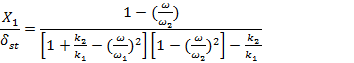
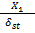
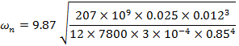
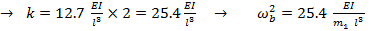
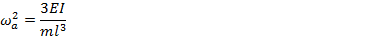
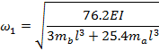

International Journal of Mechanical Engineering and Mechatronics (IJMEM)
ISSN: 1929-2724

Volume 1, Issue 2 Year 2012 - Pages 80-87
DOI: 10.11159/ijmem.2012.010
Developing a New Design for Adaptive Tuned Dynamic Vibration Absorber (ATDVA) Based on Smart Slider-Crank Mechanism to Control of Undesirable Vibrations
Reza Mirsanei, Aidin Hajikhani, Behzad Peykari, Jahanbakhsh Hamedi
Islamic Azad University Central Tehran Branch, Department of Mechanical Engineering
Niayesh University Complex, Faculty of Technical and Engineering, Orag St., Hamila Blvd., Poonak Sq.
reza.mirsanei68@gmail.com; aidin.hajikhani@gmail.com; behzadpeykari@yahoo.com; jbhamedi@iauctb.ac.ir
Abstract - Nowadays, in every industrial field, one of the most important key item to be research is to eliminate or control of system's vibrations. In spite of this fact that the destructive and undesirable vibrations, will have a detrimental effect on the main system, it will also have negative impact on all machinery equipments in any complex. In this paper, we attempt to present a new design for Adaptive Tuned Dynamic Vibration Absorber (ATDVA), Based on Smart Slider-Crank Mechanism. This research will also investigate a practical scheme which is applied to reduce the excessive beam vibration to an acceptable range by adding an absorber to a vibratory resonant beam, especially as an alternative to active vibration control.
Keywords: Dynamic Vibration Absorber, Smart Mechanism, Control of Undesirable Vibrations, Adoptive Tuned Absorber
© Copyright 2015 Authors This is an Open Access article published under the Creative Commons Attribution License terms. Unrestricted use, distribution, and reproduction in any medium are permitted, provided the original work is properly cited.
1. Introduction
When a structure is undergoing some form of vibration, there are a number of ways in which this vibration can be controlled. Two general types of external dampers may be added to a mechanical system in order to improve its energy dissipation characteristics. They are:
1. Passive control
2. Active control
Passive control (Denys, 1999) involves some form of structural augmentation or redesign, often including the use of springs and dampers, that leads to a reduction in the vibration. Active control (Chu et al., 2005) augments the structure with sensors, actuators and some form of electronic control system, which specifically aim to reduce the measured vibration levels.
Over the last decade, smart devices have been studied as potential alternatives to the use of conventional control mechanisms for controlling mechanical vibrations. This research investigates the use of Adaptive Tuned Dynamic Vibration Absorbers (ATDVA) with smart slider-crank mechanism to control vibration in a structure (Spencer, 2008).
This study proposes a new design with the use of smart slider crank mechanism. Our purpose in this scheme is to enhance the accuracy and speed, to control of undesirable vibrations. A dynamic vibration absorber (DVA) (Den Hartog, 1985) is essentially a secondary mass, attached to an original system via a spring and damper. The natural frequency of the DVA is tuned such that it coincides with the frequency of undesirable vibrations in the original system.
Dynamic Vibration Absorbers were first invented in 1909 by Den Hartog. Work on DVAs was undertaken for the defense mechanism against earthquakes (Bozorgnia, 2004). Much work has been directed towards the use of DVAs attached to building structures, to counter seismic movements and wind forces (Samali et al., 2004).
2. Materials and Methods
The main function of the Tuneable Dynamic Vibration Absorber is to damp the undesirable vibration on the system by converting the system from one degree of freedom into the two degree of freedom, thus the resonance of system in each mode would damp and control. So we designed and attached an Adaptive Tuned Dynamic Vibration Absorber to the primary system (Figure 1).
2.1. Theory
In some situation, one DOF (degree of freedom) or multi DOF system may encounter to the resonance (the excitation frequency nearly coincides with the natural frequency of the system) with large amplitude of vibration struggling with high dynamic stresses and noise and fatigue problem. Excessive vibrations in engineering systems are generally undesirable and therefore must be avoided for the sake of safety and comfort. If neither the excitation frequency nor the natural frequency can conveniently be altered, this resonance condition can often be successfully controlled. It is possible to reduce the undesirable vibrations by extracting the energy that causes these vibrations. The extraction of this energy can be established by attaching to the main vibrating system a dynamic vibration absorber, which is simply a spring-mass system. The dynamic vibration absorber is designed such that the natural frequencies of the resulting system are away from the excitation frequency.
When we attach an auxiliary mass m2 to a machine of mass m1 through a spring with stiffness k2, two degrees of freedom system will create (Figure 2). The equations of motion of the masses m1 and m2 are (Timoshenko et al., 1974):
|
(1) |
By assuming a harmonic solution,
|
(2) |
We can obtain the steady-state amplitude of the masses m1 and m2 as we can obtain:
|
(3) |
|
(4) |
We are primarily interested in reducing the amplitude of the machine X1. In order to make the amplitude of m1 zero, the numerator of Eq. (3) should be set equal to zero. This gives:
|
(5) |
If the machine, before the addition of the dynamic vibration absorber, operates near its resonance, .Thus if the absorber is designed such that
|
(6) |
The amplitude of vibration of the machine, while operating at its original resonant frequency, will be zero. By defining:
|
(7) |
As the natural frequency of the machine or main system, and
|
(8) |
As the natural frequency of the absorber or auxiliary system, equations (3) and (4) can be rewritten as:
|
 |
(9) |
and
|
(10) |
The variation of the amplitude of vibration of the machine  with the machine speedis observable (Figure 3). The two peaks correspond to the two natural frequencies of the composite system. As seen before, X1 = 0 at, . At this frequency, equation (9) gives:
|
(11) |
This shows that the force exerted by the auxiliary spring is opposite to the impressed force () and neutralizes it, thus reducing X1 to zero. The size of the dynamic vibration absorber can be found from equations (10) and (6):
|
(12) |
Thus the values of k2 and m2 depend on the allowable
value of X2. It can be seen from Figure 3 that the dynamic
vibration absorber, while eliminating vibration at the known impressed
frequency introduces two resonant frequencies Ω1 and Ω2 at which the amplitude of the machine is infinite. In practice, the operating frequency ω must therefore be kept away from the frequencies Ω1 and Ω2.
2.2. Governing Equations for Base Structure
The governing equation for the natural frequency of a simply supported beam is given by (Thomson, 1997)
|
(13) |
For the rectangular uniform beam, E = 207 Pa, ρ= 7800 .
The second moment of inertia, I = ()/12.
The value (ρl)2 depends on the boundary conditions of the beam. For the simply supported beam, (ρl)2 is 9.87 (for the fundamental mode).
For a beam, b = 0.025m, h = 0.012m, l = 0.85m
|
 |
(14) |
2.3. Governing Equations for Cantilevered Absorber Using Discrete System Method
The absorber system is assumed to be composed of discrete systems. The absorber mass at the end of the rod is assumed to be one system, and the rod itself is another. If the damping present in the system is neglected, Dunkerleys equation (Ramamurti, 2000) can be used for analysis.
For the natural frequency, of a cantilevered beam of mass, m1,
|
(15) |
For the absorber device, two rods are in parallel, with the mass attached at L=0.1.
The total stiffness produced by the 2 rods in parallel is,
|
kt = k1 + k2  |
(16) |
For the natural frequency, of a cantilevered beam of negligible mass with a concentrated mass attached at one end,
|
 |
(17) |
Using Dunkerleys equation,
|
 |
(18) |
|
(19) |
3. Results and Discussion
In this research we presented a new smart device which can adjust itself into the best optimum situation by the slider crank mechanism very quickly. So, it would absorb the unexpected vibrations fast and accurately.
From figure 1 it can be seen that the adaptive tuned dynamic vibration absorber has been clamped below the motor and converted the one degree of freedom system into the two degree of freedom system. It comprises two bodies of equal mass fixed equidistant from the midpoint of the horizontal cantilever and they move backward and forward together with the use of a servo motor and two slider-crank mechanisms. The distance apart of the bodies varies until the system is tuned (Figure 4).
3.1. Different Sections of the System
Our device has 3 different parts (Figure1), which include main beam, motor with rotary disc and adaptive tuned dynamic vibration absorber system.
3.1.1. Motor with Rotary Disc above beam
The motor is connected to a speed control through which the speed of rotation can be varied (Figure 5).The first part which is beam, has been fixed between two joints, one of them is fixed joint another one is roller joint. Actually the theory is applied to a simply supported beam carrying a motor with mass unbalance at its mid-span as shown in figure 1. The motor is connected to a speed control through which the speed of rotation can be varied.
3.1.2. Speed Control Unit and Exciter Motor:
Figure 5 shows the speed control unit that is used in this experiment. A DC motor is used for all forced vibrations experiments powered by a control unit. This combination comprises of a control box and DC motor, which provides high precision speed control of the motor up to 3000 rev/min, irrespective of the normal load fluctuations of the motor.
3.1.3. Rotary Disc
Vibration force is applied by the rotation of perforated rotary disk. With the various speed of the motor, vibration force which is applied to system is different.
3.1.4. Adaptive Tuned Dynamic Vibration Absorber
This section can be divided into two main sections: slider-crank mechanism and electronic section (Figure 6).
3.1.4.1. Slider-Crank Mechanism
As we mentioned before, two bodies of equal mass move backward and forward together with the use two slider-crank mechanisms. In this section, we examine the slider crank mechanism.
3.1.4.1.1. Kinematics of the Slider-Crank Mechanism (Kearney, 2005)
The slider crank mechanism, (Figure 7) is a kinematic mechanism. The piston (sliding block( displacement ,x, can be determined from the geometry of the mechanism. in this research we designed slider-crank mechanism as a result of comprehensive concepts of freudenstein's equation which has been shown below.
|
|
(20) |

According to this equation we have designed a mechanism with these specifications Lengths<: L2=8, L3=10.5, L4=0
3.1.4.1.2. Analyses of the Slider-Crank Mechanism with SAM 6.0
According to the following diagram, servo motor
is allowed to rotate up to 120 degree (Figure 8). So in eq.(20),
θ is variable between 0 and 120 degrees, and the maximum amount of S will be 146.22mm. 3.1.4.2. Electronic Section 3.1.4.2.1. Electronic Section's Duty Function of the electronic
parts can be
summarized into the following
two cases: In
this part we will install an accelerometer on the supported beam for measuring the
rate of vibrations (as shown in figure 1), despite of
this fact we used a diversion measurement system. So with a 3-Axis Accelerometer sensor we would measure
the rate of vibration and if it was unacceptable, the servo motor will rotate
and would change position of masses to damping the vibrations. If the change
was enough, the actuator would stop but if not, the distance between masses would
change until the optimize situation. 3.1.4.2.2.
Calibration In
this scheme, we have setup calibration system in order to adjust our device on
various machines. So, two control keys have been setup on the circuit for
adjusting the limitation of the accelerometer range between 1 and 8. For instance, in this system,
we adjusted it on the range of 2. So if the acceleration in each direction becomes
greater than 2, the system
will begin to adapt. Also, In order to monitor the rate of
acceleration in a steady situation, a control button has been placed (Figure
9). 3.2.
Numerical Results Adaptive
Tuned Dynamic Vibration Absorber (ATDVA) and Dynamic Vibration Absorber (DVA)
has been experimented in the real situation on the simply supported beam in the
laboratory and interestingly the results are almost as same as in comparison
with the results of the simulation model. With the compare of diagrams in the
following figure, it can be seen that,
ATDVA damped the resonance and it has been decreased the rate of
vibration on the device in every forces acting which is applied by changing the
speed of motor and rotary disk on the machine during the experiment (Table 1).
According to the table 1,we provide a diagram for each
method(Figure 10). But
with the DVA, The primary system possess to the characteristics of a
two-degrees of freedom (Hunt, 1979) which it has two natural frequenciesΩ1 and Ω2(Korenev et al.,
1993). So whenever the dynamic
absorber is tuned to one excitation frequency , the steady-state amplitude of the machine is
zero only at that frequency. If the machine operates at other frequencies or if
the force acting on the machine has several frequencies, then the amplitude of
vibration of the machine may become large (Nishimura et al.,1990). Table 1. Numerical results during the experiment RPM With Absorber Without Absorber Adjustable Absorber Ax Ay Ax Ay Ax Ay 84 0 0 0 0 0 0 200 0.76 0.48 0.32 0.23 0.36 0.19 300 0.89 0.64 0.51 0.72 0.55 0.41 400 1.17 0.99 0.86 0.79 1.12 0.99 500 2.4 2.9 1.6 1.1 0.42 0.34 600 6.71 6.01 2.14 2.03 0.56 0.48 700 2.12 1.8 2.91 2.54 1.34 1.31 800 1.12 0.84 3.05 2.94 0.64 0.53 900 0.31 0.36 3.45 3.36 0.36 0.21 980 0.18 0.27 6.13 6.48 0.45 0.55 1000 0.49 0.32 4.23 2.75 1.41 1.38 1100 1.04 0.56 2.6 2.21 0.51 0.43 1200 1.66 1.43 2.14 2.06 0.35 0.31 1300 2.34 2.18 2.05 1.94 1.21 1.34 1400 6.11 6.51 1.67 1.33 0.41 0.54 1500 2.17 1.4 0.91 0.73 0.62 0.68 1600 1.3 1.03 0.41 0.69 0.82 0.79 3.3.
Analysis with Finite Element Method In
order to analyze the whole device with more accuracy
and for predicting various conditions of the device, Adaptive Tuned Dynamic
Vibration Absorber has been simulated by finite element method (Segerlind, 1984) with ABAQUS. So the whole model has been
designed into the part section and has given the same property as it was in a
real situation. Then the whole model has been assembled and has given the
suitable interactions. At the next step, the assembled model were partitioned
and meshed by the most suitable technique which is called structured and 6368
elements have been generated on this model with quadratic geometric order
(Figure 11). Into the next step, the same amplitude which has been shown in the
next part is going to incur on the top-middle of the whole model. The
rotary disc which is causes of undesirable vibrations,
has been simulated. Therefore the reaction force in direction 2 (Y-axis) on the
central node of the disc has been plotted. The results from the plot are going
to define the amplitude of concentrated force which is incur on the top-middle
of simply supported beam instead of rotary disc in simulation (Figure 12). The
results are going to show the acceleration of one specific node during the load
with dynamic vibration absorber or without (Figure 13). So,
it can be proven that in a beam without dynamic vibration absorber, the
acceleration in Y-axis on a specific point where we had put an accelerometer on, was considerably more than a beam with dynamic vibration
absorber. The
aim of this device is to reducing the undesirable vibrations by a smart and
adjustable system. Our findings suggest that a dynamic vibration absorber, which
includes adjustable mechanism and control circuits that are completely
manageable with many devices, will be controlled the undesirable vibrations. The following
conclusions can be drawn from the present study: Therefore, in this method, we eliminated some problems of the
currently existing method, though this method can be developed for the future.
Further research might explore different mechanisms and different options for
dynamic vibration absorber. We hope the results of this study can be used for
better promoting of this method. The authors would like to
acknowledge the Faculty of engineering Department, Islamic Azad
University Central Tehran Branch, and we thank the honorable
responsible of the laboratory of mechanical engineering, Mr.
Hoseyni Nejad for their
support and contribution to this study. Bozorgnia, Y. (2004)."Earthquake Engineering: From Engineering Seismology to Performance-Based Engineering" .
Chu, S. Y., Soong, T. T., Reinhorn, A. M. ( 2005)."Active, Hybrid and Semi-Active Structural Control" John Wiley & Sons.
View Article Den, H. (1985). "Mechanical Vibrations" Published By McGraw-Hill, New York (ISBN 978-0486647852) .pages:87-106 Denys, J. M. (1999). "Passive Vibration Control" Wiley, 1-31 Hunt, J. B. (1979). "Dynamic Vibration Absorbers Mechanical Engineering" Publications Ltd London Kearney M. (2005). Laboratory Sheet, Kinematics of a slider-crank mechanism, 5-6 View Article Nishimura, H., Yoshida, K., Shimogo, T. (1990), "Optimal Active Dynamic Vibration Absorber for Multi-Degree-of-Freedom Systems", JSME International Journal, Vol. 33, No. 4, Ser. III, 513. View Article Ramamurti, V. (2000). "Mechanical Vibration Practice With Basic Theory" Samali, B., Al-Dawod, M., Naghdy, F. (2004). "Active Control of Cross Wind Response of 76-Story Tall Building Using a Fuzzy Controller", Journal of Engineering Mechanics, 2004, 130(4), 492-498. View Article Segerlind, L. (1984). "Applied Finite Element Analysis" Spencer Jr. (2008) .World Forum on Smart Materials and Smart Structures Technology: Proceedings of SMSST'07, World Forum on Smart Materials and Smart Structures in Engineering, Water and Earth Sciences. View Article Thomson, T. (1997). "Theory of Vibration with Applications" Timoshenko, D. H. Young, W. (1974). "Vibration Problems in Engineering" John Wiley Tosio Kato. (1995)."Perturbation Theory for Linear Operators (Classics in Mathematics)" Springer.
4. Conclusion
Acknowledgement
References